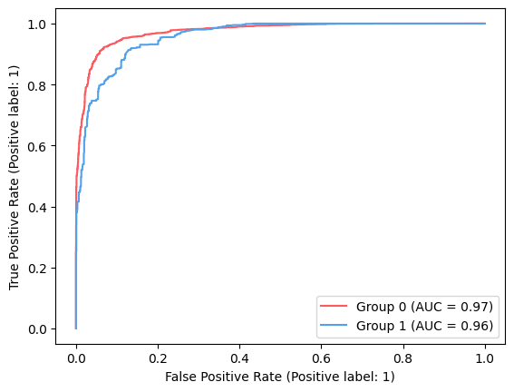
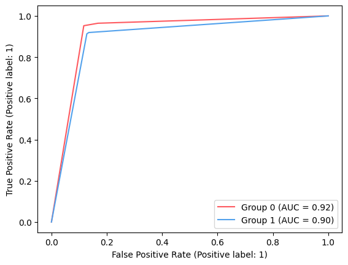

3.1. Fairness#
import numpy as np
import pandas as pd
import optuna
np.random.seed(0)
from sklearn.model_selection import train_test_split
from sklearn.metrics import accuracy_score, roc_auc_score
from sklearn.model_selection import StratifiedKFold
from xgboost import XGBClassifier
# Fetch loan approval data (synthesized)
url = (
"https://drive.google.com/file/d/1r6gGvL_s313ThGSU7ziZiuYr2G_yijaZ/view?usp=sharing"
)
file_id = url.split("/")[-2]
dataset = pd.read_csv(f"https://drive.google.com/uc?id={file_id}")
sensitive_columns = ["Gender"]
condition_gender = dataset["Gender"] == "Female"
categorical_features = [
"Married",
"Dependents",
"Education",
"Self_Employed",
"Property_Area",
]
dataset["Sensitive_Group"] = np.where(condition_gender, 1, 0)
print(dataset["Sensitive_Group"].mean())
dataset["Loan_Status"] = np.where(dataset["Loan_Status"].isin(["Y"]), 1, 0)
0.1776
display(dataset.groupby("Gender").agg(approval_rate=("Loan_Status", "mean")))
| approval_rate | |
|---|---|
| Gender | |
| Female | 0.640203 |
| Male | 0.731494 |
We can see that women have a lower approval rate in the training data.
# from https://fairlearn.org/main/auto_examples/plot_credit_loan_decisions.html
def resample_training_data(X, y, A):
"""Down-sample the majority class in the training dataset to produce a
balanced dataset with a 50/50 split in the predictive labels.
Parameters:
X: The training split of the features
y: The training split of the target labels
A: The training split of the sensitive features
Returns:
Tuple of X_train, Y_train, A_train where each dataset has been re-balanced.
"""
common_indices = X.index.intersection(y.index).intersection(A.index)
X = X.loc[common_indices, :]
y = y.loc[common_indices]
A = A.loc[common_indices]
negative_ids = y[y == 0].index
positive_ids = y[y == 1].index
balanced_ids = positive_ids.union(
np.random.choice(a=negative_ids, size=len(positive_ids))
)
X_resampled = X.loc[balanced_ids, :]
y_resampled = y.loc[balanced_ids]
A_resampled = A.loc[balanced_ids]
return X_resampled, y_resampled, A_resampled
We resample our data to use a 50% threshold for classifying a label as approved or rejected.
# Load your dataset and preprocess it
X = dataset.drop(["Loan_ID"] + sensitive_columns, axis=1)
y = X.pop("Loan_Status")
A = X.pop("Sensitive_Group")
# Split your data into an initial train and test set
ix_train, ix_test = train_test_split(
X.index, test_size=0.3, random_state=42, stratify=y
)
print(f"Average approval rate before resampling: {y.mean():.2%}")
# Resample your training data for balancing
X_train, y_train, A_train = resample_training_data(
X.loc[ix_train], y.loc[ix_train], A.loc[ix_train]
)
# Resample your test data to ensure consistency in rebalancing
X_test, y_test, A_test = resample_training_data(
X.loc[ix_test], y.loc[ix_test], A.loc[ix_test]
)
# Concatenate the resampled data to have complete X, y, and A
X_b, y_b, A_b = (
pd.concat([X_train, X_test]),
pd.concat([y_train, y_test]),
pd.concat([A_train, A_test]),
)
X_b.reset_index(drop=True, inplace=True)
y_b.reset_index(drop=True, inplace=True)
A_b.reset_index(drop=True, inplace=True)
# Assign indexes on new data
ix_train_b, ix_test_b = y_train.index, y_test.index
print(f"Average approval rate after resampling: {y_b.mean():.2%}")
# Convert categorical features to category data type
for cat in categorical_features:
X_b[cat] = X_b[cat].astype("category")
Average approval rate before resampling: 70.89%
Average approval rate after resampling: 50.00%
Fairness Unaware Model
import numpy as np
import optuna
from sklearn.metrics import accuracy_score, roc_auc_score
from sklearn.model_selection import StratifiedKFold
from xgboost import XGBClassifier
base_params = {
"base_score": y_b.loc[ix_train_b].mean(),
"eval_metric": ["auc"],
"missing": np.nan,
"early_stopping_rounds": 10,
"enable_categorical": True,
"tree_method": "hist",
"random_state": 42,
}
n_splits = 10
def objective(trial):
skf = StratifiedKFold(n_splits=n_splits, shuffle=True, random_state=42)
accuracy_scores = []
for train_idx, val_idx in skf.split(X_b.loc[ix_train_b], y_b.loc[ix_train_b]):
X_train, X_val = (
X_b.loc[ix_train_b].iloc[train_idx],
X_b.loc[ix_train_b].iloc[val_idx],
)
y_train, y_val = (
y_b.loc[ix_train_b].iloc[train_idx],
y_b.loc[ix_train_b].iloc[val_idx],
)
params = {
"n_estimators": trial.suggest_int("n_estimators", 5, 100),
"learning_rate": trial.suggest_float("learning_rate", 0.1, 0.5, step=0.05),
"max_depth": trial.suggest_int("max_depth", 1, 15),
"gamma": trial.suggest_float("gamma", 0, 1, step=0.1),
"subsample": trial.suggest_float("subsample", 0.5, 1, step=0.05),
"colsample_bytree": trial.suggest_float(
"colsample_bytree", 0.5, 1, step=0.01
),
"min_child_weight": trial.suggest_int("min_child_weight", 1, 50),
"alpha": trial.suggest_float("alpha", 0, 30, step=0.005),
"lambda": trial.suggest_float("lambda", 0, 30, step=0.005),
"grow_policy": trial.suggest_categorical(
"grow_policy", ["depthwise", "lossguide"]
),
}
base_params.update(params)
xgb_model = XGBClassifier(**base_params)
xgb_model.fit(X_train, y_train, eval_set=[(X_val, y_val)], verbose=False)
y_pred_xgb_train = xgb_model.predict(X_train)
y_pred_xgb_test = xgb_model.predict(X_val)
train_score = accuracy_score(y_train, y_pred_xgb_train)
test_score = accuracy_score(y_val, y_pred_xgb_test)
train_err = 1 - train_score
test_err = 1 - test_score
score = test_score * abs(train_err/test_err)
accuracy_scores.append(score)
return np.mean(accuracy_scores)
# Create an Optuna study and optimize the objective function
study = optuna.create_study(direction="maximize")
study.optimize(objective, n_trials=50)
# Get the best hyperparameters
best_params = study.best_params
print("Best Hyperparameters:", best_params)
[I 2023-11-06 21:14:33,514] A new study created in memory with name: no-name-8b1657af-391f-43ed-ac50-0299f7832b87
[I 2023-11-06 21:14:34,539] Trial 0 finished with value: 0.752321181918692 and parameters: {'n_estimators': 67, 'learning_rate': 0.1, 'max_depth': 4, 'gamma': 0.7000000000000001, 'subsample': 0.6, 'colsample_bytree': 0.95, 'min_child_weight': 23, 'alpha': 15.235, 'lambda': 3.96, 'grow_policy': 'lossguide'}. Best is trial 0 with value: 0.752321181918692.
[I 2023-11-06 21:14:35,073] Trial 1 finished with value: 0.7464887496046787 and parameters: {'n_estimators': 23, 'learning_rate': 0.45000000000000007, 'max_depth': 8, 'gamma': 0.9, 'subsample': 0.55, 'colsample_bytree': 0.55, 'min_child_weight': 39, 'alpha': 8.455, 'lambda': 15.395, 'grow_policy': 'lossguide'}. Best is trial 0 with value: 0.752321181918692.
[I 2023-11-06 21:14:35,366] Trial 2 finished with value: 0.7321557058896484 and parameters: {'n_estimators': 6, 'learning_rate': 0.2, 'max_depth': 14, 'gamma': 0.2, 'subsample': 0.95, 'colsample_bytree': 0.6, 'min_child_weight': 21, 'alpha': 11.36, 'lambda': 23.97, 'grow_policy': 'depthwise'}. Best is trial 0 with value: 0.752321181918692.
[I 2023-11-06 21:14:36,078] Trial 3 finished with value: 0.7473192779416016 and parameters: {'n_estimators': 34, 'learning_rate': 0.5, 'max_depth': 11, 'gamma': 0.2, 'subsample': 0.55, 'colsample_bytree': 0.89, 'min_child_weight': 16, 'alpha': 27.830000000000002, 'lambda': 22.05, 'grow_policy': 'lossguide'}. Best is trial 0 with value: 0.752321181918692.
[I 2023-11-06 21:14:36,611] Trial 4 finished with value: 0.7343930280926723 and parameters: {'n_estimators': 56, 'learning_rate': 0.35, 'max_depth': 1, 'gamma': 0.6000000000000001, 'subsample': 0.9, 'colsample_bytree': 0.66, 'min_child_weight': 17, 'alpha': 25.21, 'lambda': 12.47, 'grow_policy': 'lossguide'}. Best is trial 0 with value: 0.752321181918692.
[I 2023-11-06 21:14:37,763] Trial 5 finished with value: 0.755519668002661 and parameters: {'n_estimators': 72, 'learning_rate': 0.5, 'max_depth': 11, 'gamma': 0.1, 'subsample': 0.75, 'colsample_bytree': 0.52, 'min_child_weight': 3, 'alpha': 22.755, 'lambda': 10.48, 'grow_policy': 'lossguide'}. Best is trial 5 with value: 0.755519668002661.
[I 2023-11-06 21:14:38,484] Trial 6 finished with value: 0.746682461752884 and parameters: {'n_estimators': 33, 'learning_rate': 0.25, 'max_depth': 11, 'gamma': 1.0, 'subsample': 0.6, 'colsample_bytree': 0.59, 'min_child_weight': 23, 'alpha': 4.695, 'lambda': 16.945, 'grow_policy': 'lossguide'}. Best is trial 5 with value: 0.755519668002661.
[I 2023-11-06 21:14:39,651] Trial 7 finished with value: 0.7475919477943532 and parameters: {'n_estimators': 94, 'learning_rate': 0.30000000000000004, 'max_depth': 5, 'gamma': 0.6000000000000001, 'subsample': 0.6, 'colsample_bytree': 0.97, 'min_child_weight': 45, 'alpha': 10.450000000000001, 'lambda': 4.255, 'grow_policy': 'depthwise'}. Best is trial 5 with value: 0.755519668002661.
[I 2023-11-06 21:14:40,205] Trial 8 finished with value: 0.7467984424343149 and parameters: {'n_estimators': 38, 'learning_rate': 0.30000000000000004, 'max_depth': 4, 'gamma': 0.9, 'subsample': 0.7, 'colsample_bytree': 0.79, 'min_child_weight': 42, 'alpha': 21.23, 'lambda': 8.085, 'grow_policy': 'lossguide'}. Best is trial 5 with value: 0.755519668002661.
[I 2023-11-06 21:14:40,734] Trial 9 finished with value: 0.7346408507959851 and parameters: {'n_estimators': 16, 'learning_rate': 0.5, 'max_depth': 15, 'gamma': 1.0, 'subsample': 0.65, 'colsample_bytree': 0.5, 'min_child_weight': 19, 'alpha': 4.505, 'lambda': 29.67, 'grow_policy': 'lossguide'}. Best is trial 5 with value: 0.755519668002661.
[I 2023-11-06 21:14:42,063] Trial 10 finished with value: 0.7290007246048326 and parameters: {'n_estimators': 83, 'learning_rate': 0.4, 'max_depth': 11, 'gamma': 0.0, 'subsample': 0.8, 'colsample_bytree': 0.73, 'min_child_weight': 2, 'alpha': 20.695, 'lambda': 9.93, 'grow_policy': 'depthwise'}. Best is trial 5 with value: 0.755519668002661.
[I 2023-11-06 21:14:43,792] Trial 11 finished with value: 0.734433328399163 and parameters: {'n_estimators': 68, 'learning_rate': 0.15000000000000002, 'max_depth': 7, 'gamma': 0.4, 'subsample': 0.75, 'colsample_bytree': 0.8400000000000001, 'min_child_weight': 1, 'alpha': 17.28, 'lambda': 1.6300000000000001, 'grow_policy': 'lossguide'}. Best is trial 5 with value: 0.755519668002661.
[I 2023-11-06 21:14:44,264] Trial 12 finished with value: 0.7176713951116235 and parameters: {'n_estimators': 73, 'learning_rate': 0.1, 'max_depth': 1, 'gamma': 0.7000000000000001, 'subsample': 0.8500000000000001, 'colsample_bytree': 0.97, 'min_child_weight': 31, 'alpha': 14.875, 'lambda': 5.985, 'grow_policy': 'lossguide'}. Best is trial 5 with value: 0.755519668002661.
[I 2023-11-06 21:14:45,461] Trial 13 finished with value: 0.7492025226799852 and parameters: {'n_estimators': 55, 'learning_rate': 0.1, 'max_depth': 5, 'gamma': 0.4, 'subsample': 0.7, 'colsample_bytree': 0.71, 'min_child_weight': 9, 'alpha': 22.23, 'lambda': 0.17, 'grow_policy': 'lossguide'}. Best is trial 5 with value: 0.755519668002661.
[I 2023-11-06 21:14:47,619] Trial 14 finished with value: 0.6307853168568236 and parameters: {'n_estimators': 99, 'learning_rate': 0.4, 'max_depth': 13, 'gamma': 0.0, 'subsample': 1.0, 'colsample_bytree': 0.87, 'min_child_weight': 34, 'alpha': 0.2, 'lambda': 11.07, 'grow_policy': 'depthwise'}. Best is trial 5 with value: 0.755519668002661.
[I 2023-11-06 21:14:48,499] Trial 15 finished with value: 0.7509807267911981 and parameters: {'n_estimators': 72, 'learning_rate': 0.2, 'max_depth': 3, 'gamma': 0.2, 'subsample': 0.5, 'colsample_bytree': 1.0, 'min_child_weight': 10, 'alpha': 15.735000000000001, 'lambda': 4.9, 'grow_policy': 'lossguide'}. Best is trial 5 with value: 0.755519668002661.
[I 2023-11-06 21:14:49,604] Trial 16 finished with value: 0.7510627874454692 and parameters: {'n_estimators': 84, 'learning_rate': 0.25, 'max_depth': 9, 'gamma': 0.7000000000000001, 'subsample': 0.8, 'colsample_bytree': 0.67, 'min_child_weight': 28, 'alpha': 18.355, 'lambda': 18.27, 'grow_policy': 'lossguide'}. Best is trial 5 with value: 0.755519668002661.
[I 2023-11-06 21:14:50,305] Trial 17 finished with value: 0.7606804791577519 and parameters: {'n_estimators': 46, 'learning_rate': 0.4, 'max_depth': 7, 'gamma': 0.4, 'subsample': 0.65, 'colsample_bytree': 0.8, 'min_child_weight': 9, 'alpha': 29.84, 'lambda': 7.74, 'grow_policy': 'lossguide'}. Best is trial 17 with value: 0.7606804791577519.
[I 2023-11-06 21:14:50,890] Trial 18 finished with value: 0.750902807188947 and parameters: {'n_estimators': 49, 'learning_rate': 0.45000000000000007, 'max_depth': 9, 'gamma': 0.30000000000000004, 'subsample': 0.75, 'colsample_bytree': 0.8, 'min_child_weight': 8, 'alpha': 29.45, 'lambda': 13.185, 'grow_policy': 'depthwise'}. Best is trial 17 with value: 0.7606804791577519.
[I 2023-11-06 21:14:51,726] Trial 19 finished with value: 0.7455830973660353 and parameters: {'n_estimators': 48, 'learning_rate': 0.4, 'max_depth': 7, 'gamma': 0.1, 'subsample': 0.7, 'colsample_bytree': 0.76, 'min_child_weight': 50, 'alpha': 25.53, 'lambda': 7.36, 'grow_policy': 'lossguide'}. Best is trial 17 with value: 0.7606804791577519.
[I 2023-11-06 21:14:52,602] Trial 20 finished with value: 0.7559228489353162 and parameters: {'n_estimators': 60, 'learning_rate': 0.45000000000000007, 'max_depth': 12, 'gamma': 0.4, 'subsample': 0.8500000000000001, 'colsample_bytree': 0.5, 'min_child_weight': 5, 'alpha': 25.01, 'lambda': 20.375, 'grow_policy': 'lossguide'}. Best is trial 17 with value: 0.7606804791577519.
[I 2023-11-06 21:14:53,497] Trial 21 finished with value: 0.7594726971887463 and parameters: {'n_estimators': 64, 'learning_rate': 0.45000000000000007, 'max_depth': 12, 'gamma': 0.4, 'subsample': 0.8500000000000001, 'colsample_bytree': 0.51, 'min_child_weight': 5, 'alpha': 24.900000000000002, 'lambda': 20.17, 'grow_policy': 'lossguide'}. Best is trial 17 with value: 0.7606804791577519.
[I 2023-11-06 21:14:54,260] Trial 22 finished with value: 0.7649436050450402 and parameters: {'n_estimators': 62, 'learning_rate': 0.45000000000000007, 'max_depth': 13, 'gamma': 0.4, 'subsample': 0.8500000000000001, 'colsample_bytree': 0.59, 'min_child_weight': 14, 'alpha': 26.465, 'lambda': 21.025000000000002, 'grow_policy': 'lossguide'}. Best is trial 22 with value: 0.7649436050450402.
[I 2023-11-06 21:14:55,013] Trial 23 finished with value: 0.7487837870276947 and parameters: {'n_estimators': 45, 'learning_rate': 0.35, 'max_depth': 15, 'gamma': 0.5, 'subsample': 0.8500000000000001, 'colsample_bytree': 0.58, 'min_child_weight': 13, 'alpha': 29.425, 'lambda': 25.825, 'grow_policy': 'lossguide'}. Best is trial 22 with value: 0.7649436050450402.
[I 2023-11-06 21:14:55,852] Trial 24 finished with value: 0.741450701868281 and parameters: {'n_estimators': 59, 'learning_rate': 0.35, 'max_depth': 13, 'gamma': 0.5, 'subsample': 0.9, 'colsample_bytree': 0.64, 'min_child_weight': 13, 'alpha': 26.825, 'lambda': 19.905, 'grow_policy': 'lossguide'}. Best is trial 22 with value: 0.7649436050450402.
[I 2023-11-06 21:14:56,684] Trial 25 finished with value: 0.7470004070073092 and parameters: {'n_estimators': 82, 'learning_rate': 0.45000000000000007, 'max_depth': 9, 'gamma': 0.30000000000000004, 'subsample': 0.95, 'colsample_bytree': 0.56, 'min_child_weight': 7, 'alpha': 24.295, 'lambda': 26.725, 'grow_policy': 'lossguide'}. Best is trial 22 with value: 0.7649436050450402.
[I 2023-11-06 21:14:57,319] Trial 26 finished with value: 0.7578896897041708 and parameters: {'n_estimators': 42, 'learning_rate': 0.4, 'max_depth': 13, 'gamma': 0.30000000000000004, 'subsample': 0.8, 'colsample_bytree': 0.63, 'min_child_weight': 12, 'alpha': 28.265, 'lambda': 15.05, 'grow_policy': 'depthwise'}. Best is trial 22 with value: 0.7649436050450402.
[I 2023-11-06 21:14:58,003] Trial 27 finished with value: 0.7453908499481752 and parameters: {'n_estimators': 64, 'learning_rate': 0.45000000000000007, 'max_depth': 7, 'gamma': 0.6000000000000001, 'subsample': 0.9, 'colsample_bytree': 0.8200000000000001, 'min_child_weight': 15, 'alpha': 18.925, 'lambda': 22.165, 'grow_policy': 'lossguide'}. Best is trial 22 with value: 0.7649436050450402.
[I 2023-11-06 21:14:58,588] Trial 28 finished with value: 0.7652079823188073 and parameters: {'n_estimators': 25, 'learning_rate': 0.5, 'max_depth': 10, 'gamma': 0.4, 'subsample': 1.0, 'colsample_bytree': 0.7, 'min_child_weight': 6, 'alpha': 29.8, 'lambda': 17.635, 'grow_policy': 'lossguide'}. Best is trial 28 with value: 0.7652079823188073.
[I 2023-11-06 21:14:59,097] Trial 29 finished with value: 0.7504609346265171 and parameters: {'n_estimators': 17, 'learning_rate': 0.5, 'max_depth': 10, 'gamma': 0.5, 'subsample': 1.0, 'colsample_bytree': 0.69, 'min_child_weight': 27, 'alpha': 29.975, 'lambda': 17.56, 'grow_policy': 'lossguide'}. Best is trial 28 with value: 0.7652079823188073.
[I 2023-11-06 21:14:59,579] Trial 30 finished with value: 0.7389699682877721 and parameters: {'n_estimators': 27, 'learning_rate': 0.5, 'max_depth': 6, 'gamma': 0.5, 'subsample': 0.65, 'colsample_bytree': 0.76, 'min_child_weight': 24, 'alpha': 27.17, 'lambda': 13.185, 'grow_policy': 'lossguide'}. Best is trial 28 with value: 0.7652079823188073.
[I 2023-11-06 21:15:00,321] Trial 31 finished with value: 0.7571170650256168 and parameters: {'n_estimators': 65, 'learning_rate': 0.45000000000000007, 'max_depth': 12, 'gamma': 0.4, 'subsample': 0.95, 'colsample_bytree': 0.54, 'min_child_weight': 4, 'alpha': 23.77, 'lambda': 19.525000000000002, 'grow_policy': 'lossguide'}. Best is trial 28 with value: 0.7652079823188073.
[I 2023-11-06 21:15:01,083] Trial 32 finished with value: 0.7467754697233725 and parameters: {'n_estimators': 52, 'learning_rate': 0.4, 'max_depth': 10, 'gamma': 0.30000000000000004, 'subsample': 1.0, 'colsample_bytree': 0.61, 'min_child_weight': 5, 'alpha': 27.205000000000002, 'lambda': 16.135, 'grow_policy': 'lossguide'}. Best is trial 28 with value: 0.7652079823188073.
[I 2023-11-06 21:15:01,504] Trial 33 finished with value: 0.7488566238105611 and parameters: {'n_estimators': 10, 'learning_rate': 0.45000000000000007, 'max_depth': 14, 'gamma': 0.4, 'subsample': 0.65, 'colsample_bytree': 0.91, 'min_child_weight': 10, 'alpha': 25.66, 'lambda': 22.005, 'grow_policy': 'lossguide'}. Best is trial 28 with value: 0.7652079823188073.
[I 2023-11-06 21:15:02,057] Trial 34 finished with value: 0.746588501697204 and parameters: {'n_estimators': 25, 'learning_rate': 0.5, 'max_depth': 8, 'gamma': 0.2, 'subsample': 0.95, 'colsample_bytree': 0.56, 'min_child_weight': 20, 'alpha': 28.55, 'lambda': 23.47, 'grow_policy': 'lossguide'}. Best is trial 28 with value: 0.7652079823188073.
[I 2023-11-06 21:15:02,805] Trial 35 finished with value: 0.7512547576580844 and parameters: {'n_estimators': 33, 'learning_rate': 0.35, 'max_depth': 12, 'gamma': 0.5, 'subsample': 0.9, 'colsample_bytree': 0.73, 'min_child_weight': 7, 'alpha': 26.59, 'lambda': 18.525000000000002, 'grow_policy': 'lossguide'}. Best is trial 28 with value: 0.7652079823188073.
[I 2023-11-06 21:15:03,464] Trial 36 finished with value: 0.7496149500738502 and parameters: {'n_estimators': 79, 'learning_rate': 0.5, 'max_depth': 10, 'gamma': 0.8, 'subsample': 0.55, 'colsample_bytree': 0.67, 'min_child_weight': 17, 'alpha': 23.77, 'lambda': 25.88, 'grow_policy': 'lossguide'}. Best is trial 28 with value: 0.7652079823188073.
[I 2023-11-06 21:15:04,199] Trial 37 finished with value: 0.7459415984832638 and parameters: {'n_estimators': 37, 'learning_rate': 0.45000000000000007, 'max_depth': 14, 'gamma': 0.6000000000000001, 'subsample': 0.8500000000000001, 'colsample_bytree': 0.63, 'min_child_weight': 1, 'alpha': 29.88, 'lambda': 14.15, 'grow_policy': 'lossguide'}. Best is trial 28 with value: 0.7652079823188073.
[I 2023-11-06 21:15:04,938] Trial 38 finished with value: 0.7428903649576102 and parameters: {'n_estimators': 61, 'learning_rate': 0.4, 'max_depth': 8, 'gamma': 0.30000000000000004, 'subsample': 0.8, 'colsample_bytree': 0.86, 'min_child_weight': 11, 'alpha': 20.5, 'lambda': 16.0, 'grow_policy': 'depthwise'}. Best is trial 28 with value: 0.7652079823188073.
[I 2023-11-06 21:15:05,719] Trial 39 finished with value: 0.7604343105377439 and parameters: {'n_estimators': 29, 'learning_rate': 0.5, 'max_depth': 11, 'gamma': 0.1, 'subsample': 0.75, 'colsample_bytree': 0.53, 'min_child_weight': 15, 'alpha': 13.69, 'lambda': 23.830000000000002, 'grow_policy': 'lossguide'}. Best is trial 28 with value: 0.7652079823188073.
[I 2023-11-06 21:15:06,238] Trial 40 finished with value: 0.7593700764056452 and parameters: {'n_estimators': 18, 'learning_rate': 0.5, 'max_depth': 11, 'gamma': 0.2, 'subsample': 0.7, 'colsample_bytree': 0.53, 'min_child_weight': 14, 'alpha': 13.425, 'lambda': 29.295, 'grow_policy': 'lossguide'}. Best is trial 28 with value: 0.7652079823188073.
[I 2023-11-06 21:15:07,005] Trial 41 finished with value: 0.7327100107374568 and parameters: {'n_estimators': 28, 'learning_rate': 0.45000000000000007, 'max_depth': 12, 'gamma': 0.4, 'subsample': 0.75, 'colsample_bytree': 0.58, 'min_child_weight': 18, 'alpha': 8.19, 'lambda': 20.95, 'grow_policy': 'lossguide'}. Best is trial 28 with value: 0.7652079823188073.
[I 2023-11-06 21:15:07,861] Trial 42 finished with value: 0.7488295623042592 and parameters: {'n_estimators': 40, 'learning_rate': 0.5, 'max_depth': 10, 'gamma': 0.2, 'subsample': 0.75, 'colsample_bytree': 0.51, 'min_child_weight': 6, 'alpha': 12.450000000000001, 'lambda': 23.59, 'grow_policy': 'lossguide'}. Best is trial 28 with value: 0.7652079823188073.
[I 2023-11-06 21:15:08,351] Trial 43 finished with value: 0.7337578321012017 and parameters: {'n_estimators': 21, 'learning_rate': 0.5, 'max_depth': 13, 'gamma': 0.1, 'subsample': 0.6, 'colsample_bytree': 0.54, 'min_child_weight': 3, 'alpha': 28.13, 'lambda': 24.97, 'grow_policy': 'lossguide'}. Best is trial 28 with value: 0.7652079823188073.
[I 2023-11-06 21:15:08,722] Trial 44 finished with value: 0.7318226666086762 and parameters: {'n_estimators': 13, 'learning_rate': 0.4, 'max_depth': 11, 'gamma': 0.6000000000000001, 'subsample': 0.65, 'colsample_bytree': 0.6, 'min_child_weight': 21, 'alpha': 21.965, 'lambda': 22.645, 'grow_policy': 'lossguide'}. Best is trial 28 with value: 0.7652079823188073.
[I 2023-11-06 21:15:09,435] Trial 45 finished with value: 0.752002381223498 and parameters: {'n_estimators': 30, 'learning_rate': 0.5, 'max_depth': 9, 'gamma': 0.30000000000000004, 'subsample': 0.8, 'colsample_bytree': 0.78, 'min_child_weight': 9, 'alpha': 15.935, 'lambda': 21.14, 'grow_policy': 'lossguide'}. Best is trial 28 with value: 0.7652079823188073.
[I 2023-11-06 21:15:09,718] Trial 46 finished with value: 0.7475317154492304 and parameters: {'n_estimators': 7, 'learning_rate': 0.45000000000000007, 'max_depth': 14, 'gamma': 0.1, 'subsample': 0.95, 'colsample_bytree': 0.52, 'min_child_weight': 16, 'alpha': 9.255, 'lambda': 27.835, 'grow_policy': 'depthwise'}. Best is trial 28 with value: 0.7652079823188073.
[I 2023-11-06 21:15:10,237] Trial 47 finished with value: 0.7361189366625365 and parameters: {'n_estimators': 22, 'learning_rate': 0.35, 'max_depth': 11, 'gamma': 0.4, 'subsample': 0.8500000000000001, 'colsample_bytree': 0.56, 'min_child_weight': 11, 'alpha': 26.145, 'lambda': 2.46, 'grow_policy': 'lossguide'}. Best is trial 28 with value: 0.7652079823188073.
[I 2023-11-06 21:15:11,251] Trial 48 finished with value: 0.7208467539964477 and parameters: {'n_estimators': 55, 'learning_rate': 0.45000000000000007, 'max_depth': 6, 'gamma': 0.0, 'subsample': 0.55, 'colsample_bytree': 0.9199999999999999, 'min_child_weight': 4, 'alpha': 19.490000000000002, 'lambda': 18.725, 'grow_policy': 'lossguide'}. Best is trial 28 with value: 0.7652079823188073.
[I 2023-11-06 21:15:12,248] Trial 49 finished with value: 0.7362236892821145 and parameters: {'n_estimators': 68, 'learning_rate': 0.30000000000000004, 'max_depth': 15, 'gamma': 0.8, 'subsample': 0.7, 'colsample_bytree': 0.73, 'min_child_weight': 8, 'alpha': 14.105, 'lambda': 11.165000000000001, 'grow_policy': 'lossguide'}. Best is trial 28 with value: 0.7652079823188073.
Best Hyperparameters: {'n_estimators': 25, 'learning_rate': 0.5, 'max_depth': 10, 'gamma': 0.4, 'subsample': 1.0, 'colsample_bytree': 0.7, 'min_child_weight': 6, 'alpha': 29.8, 'lambda': 17.635, 'grow_policy': 'lossguide'}
# best_params.update({"enable_categorical": True})
best_params = {
'n_estimators': 150,
'learning_rate': 0.2,
'max_depth': 10,
'max_leaves': 10,
'gamma': 0,
'subsample': 0.8,
"enable_categorical": True,
'grow_policy': 'lossguide'
}
xgb_clf = XGBClassifier(**best_params)
xgb_clf.fit(X_b.loc[ix_train_b], y_b.loc[ix_train_b])
predictions_trn = xgb_clf.predict_proba(X_b.loc[ix_train_b])[:, 1]
predictions_tst = xgb_clf.predict_proba(X_b.loc[ix_test_b])[:, 1]
gini_trn = roc_auc_score(y_b.loc[ix_train_b], predictions_trn) * 2 - 1
gini_tst = roc_auc_score(y_b.loc[ix_test_b], predictions_tst) * 2 - 1
print(
f"Train Gini score: {gini_trn:.2%}\n"
f"Test Gini score: {gini_tst:.2%}"
)
Train Gini score: 94.27%
Test Gini score: 85.22%
ROC Curve
from matplotlib import pyplot as plt
from sklearn.metrics import RocCurveDisplay
label_column = y_b.loc[ix_train_b].copy()
prediction_column = xgb_clf.predict_proba(X_b.loc[ix_train_b])[:, 1]
group_column = A_b.loc[ix_train_b].copy()
roc_data = pd.DataFrame(
{"label": label_column, "proba": prediction_column, "group": group_column}
)
ax_roc_curve = plt.subplot()
colors = ["#fe595f", "#52a1ec"]
for group in [0, 1]:
roc_group = roc_data[roc_data["group"] == group]
label = f"Group {group}"
RocCurveDisplay.from_predictions(
roc_group["label"],
roc_group["proba"],
name=label,
ax=ax_roc_curve,
color=colors[group],
)

from fairlearn.metrics import equalized_odds_difference
equalized_odds_unmitigated = equalized_odds_difference(
y_b.loc[ix_test_b],
xgb_clf.predict(X_b.loc[ix_test_b]),
sensitive_features=A_b.loc[ix_test_b],
)
print(f"Eq Odds Unmitigated: {equalized_odds_unmitigated:.2%}")
score_unmitigated = (
roc_auc_score(
y_b.loc[ix_test_b], xgb_clf.predict_proba(X_b.loc[ix_test_b])[:, 1]
)
* 2
- 1
)
accuracy_unmitigated = accuracy_score(
y_b.loc[ix_test_b], xgb_clf.predict(X_b.loc[ix_test_b])
)
print(f"Accuracy Unmitigated: {accuracy_unmitigated:.2%}")
print(f"Gini score Unmitigated: {score_unmitigated:.2%}")
Eq Odds Unmitigated: 8.97%
Accuracy Unmitigated: 84.91%
Gini score Unmitigated: 85.22%
Threshold Optimizer
import warnings
warnings.simplefilter("ignore", FutureWarning)
from fairlearn.postprocessing import ThresholdOptimizer
postprocess_est = ThresholdOptimizer(
estimator=xgb_clf,
constraints="equalized_odds", # match TPR and FPR across groups
objective="accuracy_score",
prefit=True,
predict_method="auto",
flip=True
)
# Fit a ThresholdOptimizer
postprocess_est.fit(
X=X_b.loc[ix_train_b], y=y_b.loc[ix_train_b], sensitive_features=A_b.loc[ix_train_b]
)
postprocess_pred = postprocess_est.predict(
X_b.loc[ix_test_b], sensitive_features=A_b.loc[ix_test_b], random_state=42
)
postprocess_pred_proba = postprocess_est._pmf_predict(
X_b.loc[ix_test_b], sensitive_features=A_b.loc[ix_test_b]
)
eq_odds_postprocess = equalized_odds_difference(
y_b.loc[ix_test_b], postprocess_pred, sensitive_features=A_b.loc[ix_test_b]
)
score_postprocess = (
roc_auc_score(y_b.loc[ix_test_b], postprocess_pred_proba[:, 1]) * 2 - 1
)
accuracy_postprocess = accuracy_score(y_b.loc[ix_test_b], postprocess_pred)
print(f"Gini score Unmitigated: {score_unmitigated:.2%}")
print(f"Eq Odds PostProcess: {eq_odds_postprocess:.2%}")
print(f"Accuracy PostProcess: {accuracy_postprocess:.2%}")
print(f"Gini score PostProcess: {score_postprocess:.2%}")
Gini score Unmitigated: 85.22%
Eq Odds PostProcess: 5.91%
Accuracy PostProcess: 82.58%
Gini score PostProcess: 69.13%
label_column = y_b.loc[ix_train_b].copy()
prediction_column = xgb_clf.predict_proba(X_b.loc[ix_train_b])[:, 1]
postprocess_pred_proba = postprocess_est._pmf_predict(
X_b.loc[ix_train_b], sensitive_features=A_b.loc[ix_train_b]
)[:, 1]
mitigation_column = postprocess_pred_proba.copy()
group_column = A_b.loc[ix_train_b].copy()
roc_data = pd.DataFrame(
{
"label": label_column,
"proba": prediction_column,
"mitigated_proba": mitigation_column,
"group": group_column,
}
)
ax_roc_curve = plt.subplot()
colors = ["#fe595f", "#52a1ec"]
for group in [0, 1]:
roc_group = roc_data[roc_data["group"] == group]
label = f"Group {group}"
RocCurveDisplay.from_predictions(
roc_group["label"],
roc_group["mitigated_proba"],
name=label,
ax=ax_roc_curve,
color=colors[group],
)
